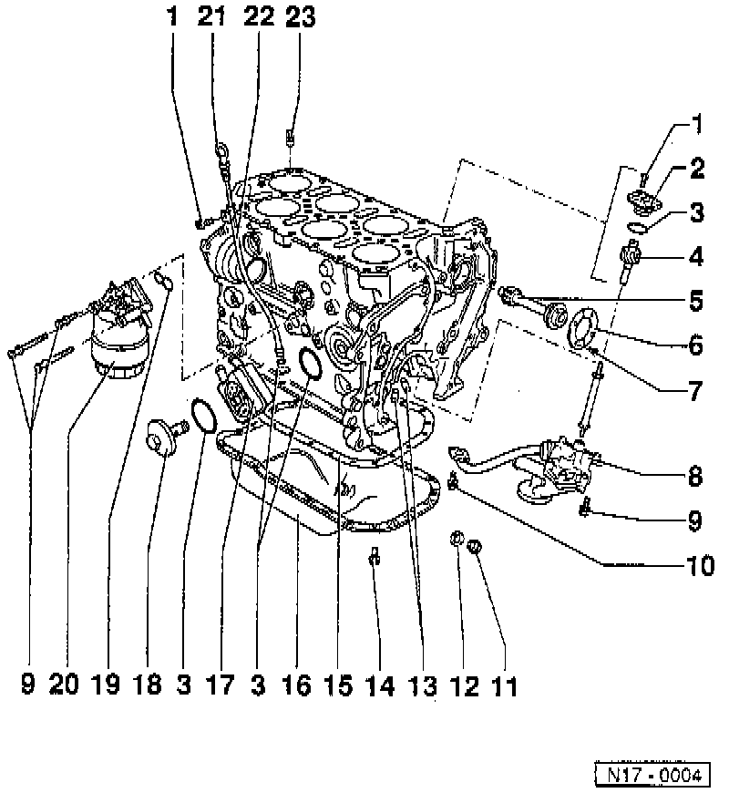

Oil Pan: Service and Repair
Lubrication system, components, removing and installing
1. 10 Nm (7 ft lbs)
2. Cover
For oil pump drive -4-
3. O-ring
Always replace.
Lubricate with oil before installing.
4. Oil Pump Drive
5. Intermediate Shaft
6. Thrust Washer
7. 10 Nm (7 ft lb)
Install with locking fluid "D6"
8. Oil Pump
Disassembling, Assembling Service and Repair
Coat oil pressure pipe connections at cylinder block and oil pump housing with AMV 188 001 02 sealant
9. 25 Nm (18 ft. lbs.).
10. 10 Nm (7 ft lb)
Always replace.
Install with locking fluid "D6"
11. Oil Drain Plug
Tightening torque 30 Nm (22 ft lbs)
12. Seal
Always replace.
13. Oil Spray Nozzle
For piston cooling.
Removing and installing, refer to Service and Repair
Opening pressure: 2.0 bar (29 psi).
14. 15 Nm (11 ft lbs)
15. Gasket
Always replace (except rubber version)
Replace rubber version if damaged
Before fitting gasket, coat pan flange and cylinder block flange with "D2"
16. Oil Pan
Clean sealing surfaces before installing.
17. Oil Cooler
Coat contact area to flange outside the seal with sealer AMV 188 100 02 sealant
Ensure clearence between adjacent components.
18. Oil Cooler Cover
Tightening torque 25 Nm (18 ft lbs)
19. Gasket
Always replace.
Note installation position.
Lubricate with oil before installing.
20. Oil Filter Housing
Disassembly and assembling refer to Service and Repair
21. Dipstick
The oil level must not be above the max. mark
22. Guide Tube
Secure with bolt to intake manifold lower section.
23. Oil non-return Valve
Tightening torque 5 Nm (44 in lbs)
Note installed position.
Clean if badly soiled